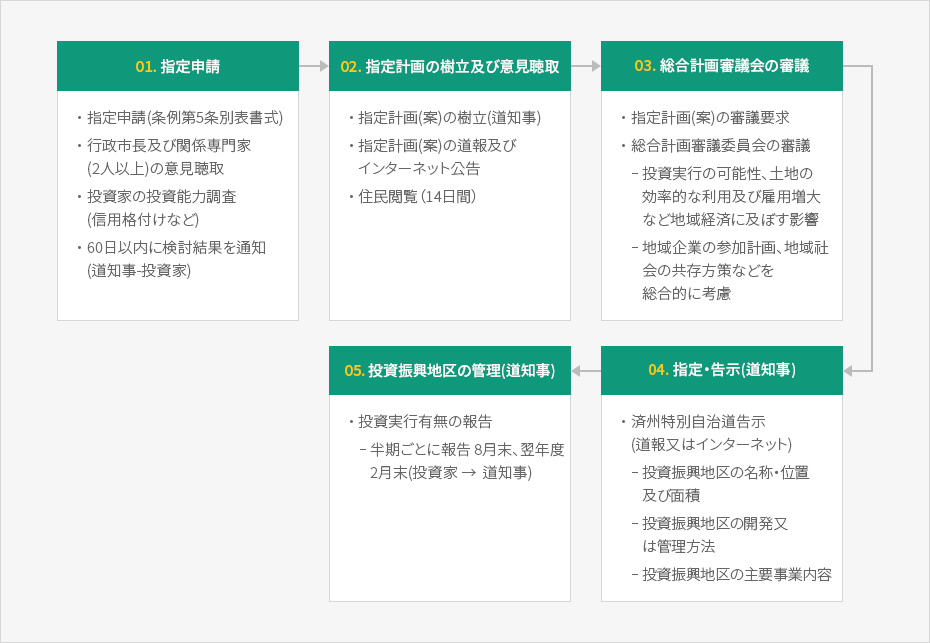

投資振興地区
- Home
- 投資環境
- 支援制度
- 投資振興地区
済州投資振興地区
済州に投資する国内外の資本に対して差別なく支援する済州特別自治道ならではの投資インセンティブです。済州の中核産業を育成するための税制減免特典や公有財産特例の適用など多様な支援を提供し、済州地域であれば投資家が希望するどの地域でも指定可能です。地区の類型
投資振興地区は個別型と団地型に分けられます。個別型は済州地域であれば投資家が希望するどの地域でも指定が可能であり、指定対象は27業種です。団地型は開発事業施行者が遊園地施設又は地区単位計画が決定された地域の土地の2/3以上を確保した場合、団地内に入居した27業種の企業を対象に指定が可能です。個別型投資振興地区
指定条件
投資総額 2,000万ドル以上- 観光ホテル業、水上観光ホテル業、韓国伝統ホテル業(カジノ業、保税販売場を除く)、総合リゾート業、専門リゾート業(ゴルフ場業、休養コンドミニアム業を除く)、観光遊覧船業、観光公演場業、総合遊園施設業、国際会議施設業、観光食堂業
- 文化産業、老人福祉施設業、青少年修練施設業、軌道事業、電気生産業、教育院(研修院)
- 自律型学校、国際高等学校、外国教育機関、国際学校
- 医療機関(医院、歯科医院、漢方医院、助産院を除く)
- 先端技術活用産業、保健医療技術研究開発事業・研究開発サービス業、食料品・飲料製造業、マリーナ産業、化粧品製造業、研究開発業
団地型投資振興地区
指定条件
投資総額 1千億ウォン以上- 開発事業施行者が遊園地施設又は地区単位計画が決定された土地の2/3以上の所有権又は使用権を確保する場合、個別型と同一の27業種を対象に指定が可能です。
投資振興地区のインセンティブ
国税の減免
- 法人税と所得税を3年間免除、翌2年間50％減免
- 開発事業施行者の法人税・所得税を3年間50％減免、翌2年間25％減免
- 指定日から3年以内に対象事業で直接使用するために輸入した資本財の関税を免除
地方税の減免
- 地方税の指定日(団地型は最初の不動産取得日)以降5年まで取得税を免税
- 指定日(団地型は最初の納税義務成立日)から10年間財産税を免除
各種負担金の減免
- 開発負担金、公有水面占用・使用料の免除、農地保全負担金、代替草地造成費、代替森林資源造成費50％減免、下水道原因者負担金15％減免
指定手続き


-
01. 指定申請
- 指定申請(条例第5条別表書式)
- 行政市長及び関係専門家(2人以上)の意見聴取
- 投資家の投資能力調査(信用格付けなど)
- 60日以内に検討結果を通知(道知事-投資家)
-
02. 指定計画の樹立及び意見聴取
- 指定計画(案)の樹立(道知事)
- 指定計画(案)の道報及びインターネット公告
- 住民閲覧（14日間）
-
03. 総合計画審議会の審議
- 指定計画(案)の審議要求
- 総合計画審議委員会の審議
- 投資実行の可能性、土地の効率的な利用及び雇用増大など地域経済に及ぼす影響
- 地域企業の参加計画、地域社会の共存方策などを総合的に考慮
-
04. 指定・告示(道知事)
- 済州特別自治道告示(道報又はインターネット)
- 投資振興地区の名称・位置及び面積
- 投資振興地区の開発又は管理方法
- 投資振興地区の主要事業内容
- 済州特別自治道告示(道報又はインターネット)
-
05. 投資振興地区の管理(道知事)
- 投資実行有無の報告
- 半期ごとに報告 8月末、翌年度2月末(投資家 ▶ 道知事)
- 投資実行有無の報告

指定以降
指定以降は済州特別自治道が投資振興地区投資計画に基づいて履行状況を管理します。
投資振興地区指定者は投資実行有無を半期ごと(8月末、2月末)に済州特別自治道に報告しなければなりません。
投資振興地区指定者は投資実行有無を半期ごと(8月末、2月末)に済州特別自治道に報告しなければなりません。